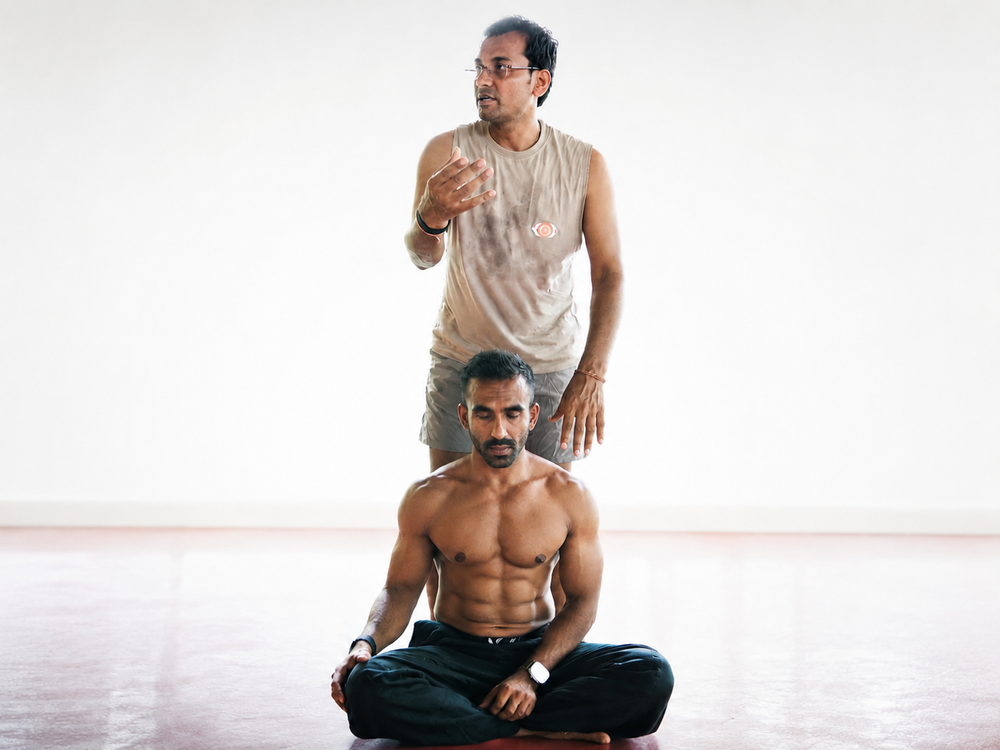
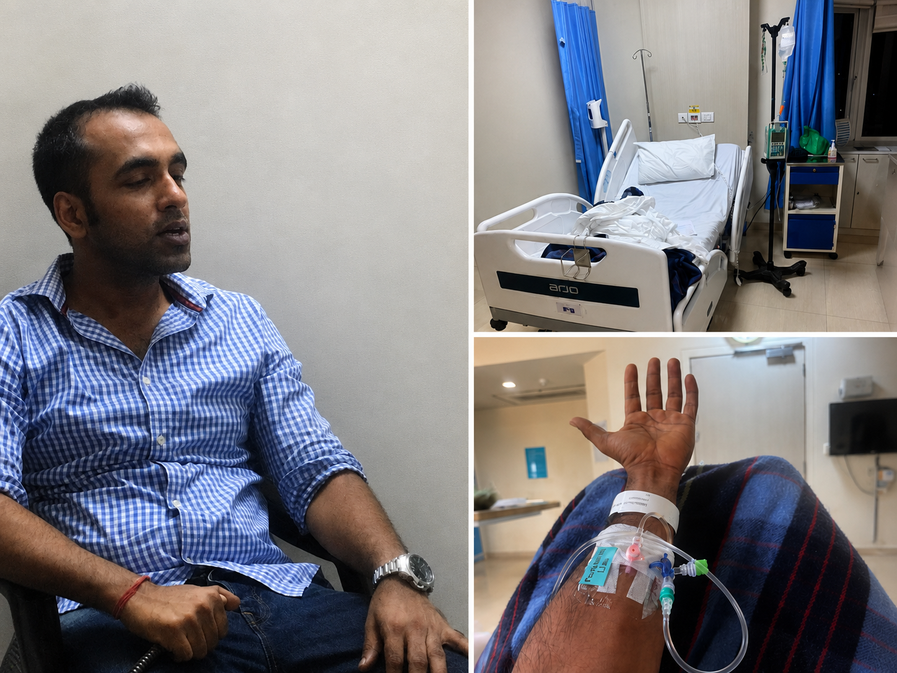

Raised capital. Built the company.
Luck got easier to find when the work, the story, and the people around it started compounding.
A founder's field guide to creating better odds in money, health, work, and life without making your body pay for it.
Free. You will also get the Monday Letter. No spam.



From Kathmandu to Wall Street, from CreditVidya to CRED, from a stroke scare to a full rebuild, the pattern was not random. Better odds came from better energy, cleaner judgment, stronger relationships, and repeated reps.
Luck got easier to find when the work, the story, and the people around it started compounding.
Work
The point was not one lucky outcome. It was learning how to keep becoming the kind of person luck can use.

The slipped disc and stroke scare were not the end of ambition. They were the signal to rebuild the operating system.

The body is part of the proof, not the whole story. Better energy made better work, love, and choices possible.
Plus a practical toolkit at the end. These are not affirmations. They are the conditions Avi used to create better odds when life was moving too fast.
Luck starts by choosing the game you are actually built to play. Comparison makes you chase someone else's odds. This chapter is about returning to your own race.
You cannot notice lucky openings when your system is carrying every old verdict, fear, and obligation. This chapter is about what to put down so you can move lighter.
Energy changes probability. When your nervous system is depleted, everything looks like a threat. When your prana is clean, you can see the room clearly.
Ego turns every outcome into a referendum on your worth. This chapter is about taking yourself out of the centre so decisions become cleaner and luck has more room.
Luck rewards the person who is ready when the door opens. The reps are boring, private, and usually invisible. That is why they work.
Prompts, practices, and reset protocols for the days when pressure starts making the decision for you. Simple enough to use before the next meeting.
Start with the five conditions for making your own luck. The Monday Letter follows.
Send me the manual ->"Five minutes before the board meeting. Three corners, one breath. The decisions land different now."
 Raghav KumarSVP
Raghav KumarSVP"I needed recovery, not intensity. Working with the rhythm instead of forcing through it changed everything."
Riya MittalAssociate Director"I now see failure as a data point, not a personal judgment. That is the difference between collapsing and adjusting."
Esha AroraProduct LeadFive ways to create better odds, plus a practical toolkit. Free, and the Monday Letter follows.
Send me the manual ->